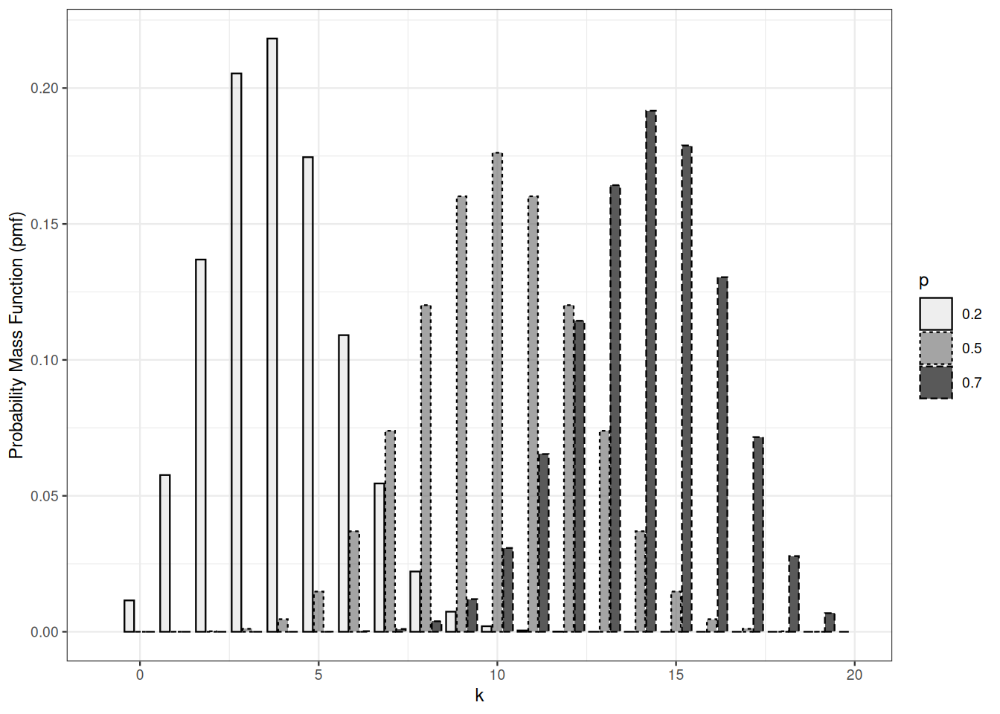

5 Families of discrete distributions
The goal of this lesson is getting acquainted with important families of discrete distributions and to get familiar with distributional calculus. Discretet probability distributions will be presented through distribution functions and mostly probability mass functions.
In this lesson, universe \(\Omega\)$ is a subset of \(\mathbb{N}^d\), it is finite or countable, the straightforward \(\sigma\)-algebra to work with is the powerset \(2^\Omega\).
5.1 Bernoulli and Binomial
Definition 5.1 A Bernoulli distribution is a probability distribution \(P\) on \(\Omega=\{0,1 \}\). The parameter of \(P\) is \(P\{1\} \in [0,1]\).
A Bernoulli distribution is completely defined by its parameter.
The expectation of a Bernoulli distribution with parameter \(p\) equals \(p\).
Definition 5.2 (Binomial distribution) A binomial distribution with parameters \(n \in \mathbb{N}, p \in [0,1]\) (\(n\) is size and \(p\) is success) is a probability distribution \(P\) on \(\Omega = \{0, 1, 2, \ldots, n\}\), defined by \[P\{k\} = \binom{n}{k} p^k (1-p)^k\]
The connexion between Bernoulli and Binomial distributions is obvious: a Bernoulli distribution is a Binomial distribution with size parameter equal to \(1\). This connexion goes further: the sum of independent Bernoulli random variables with same success parameter is Binomial distributed.
Assume now \(\Omega^{\prime} = \{0,1\}^n\).
Proposition 5.1 Let \(X_1, X_2, \ldots, X_n\) be independent, identically distributed Bernoulli random variables with success parameter \(p \in [0,1]\), then \(Y = \sum_{i=1}^n X_i\) is distributed according to a Binomial disctribution with size parameter \(n\) and success probability \(p\).
Proof. It is enough to check that the probability mass functions coincide.
For \(k \in 0, \ldots, n\)
\[\begin{align*} P\Big\{ \sum_{i=1}^n X_i = k \Big\} & = \sum_{x_1, \ldots, x_n \in \{0,1 \}^p} \mathbb{I}_{\sum_{i=1}^n x_i=k} P \Big\{ \wedge_{i=1}^n X_i = x_i\Big\} \\ & = \sum_{x_1, \ldots, x_n \in \{0,1 \}^p} \mathbb{I}_{\sum_{i=1}^n x_i=k} \prod_{i=1}^n P \Big\{ X_i = x_i\Big\} \\ & = \sum_{x_1, \ldots, x_n \in \{0,1 \}^p} \mathbb{I}_{\sum_{i=1}^n x_i=k} \prod_{i=1}^n p^{x_i} (1-p)^{1-x_i} \\ & = \sum_{x_1, \ldots, x_n \in \{0,1 \}^p} \mathbb{I}_{\sum_{i=1}^n x_i=k}\, p^{k} (1-p)^{n-k} \\ & = \binom{n}{k} p^{k} (1-p)^{n-k} \, . \end{align*}\]
\(\square\)
This observation facilitates the computation of moments of Binomial distribution.
The expected value of a Bernoulli distribution with parameter \(p\) is \(p\)! Its variance is \(p(1-p)\).
By linearity of expectation, the expected value of the binomial distribution with parameters \(n\) and \(p\) is \(np\).
The variance of a sum of independent random variables is the sum of the variances, hence the variance of he binomial distribution with parameters \(n\) and \(p\) is \(np(1-p)\).
More on wikipedia.
Binomial distributions with the same success parameter
Proposition 5.2 Let \(X,Y\) be independent over probability space \((\Omega, \mathcal{F}, P)\) and distributed according to \(\text{Bin}(n_1, p)\) and \(\text{Bin}(n_2, p)\).
Then \(X+Y\) is distributed according to \(\text{Bin}(n_1+n_2, p)\).
Exercise 5.1 Check the preceding proposition.
5.2 Poisson
The Poisson distribution appears as a limit of Binomial distributions in a variety of circumstances connected to rare events phenomena.
Definition 5.3 A Poisson distribution with parameter \(\lambda >0\) is a probability distribution \(P\) on \(\Omega=\mathbb{N}\) with
\[P\{k\} = \mathrm{e}^{-\lambda} \frac{\lambda^k}{k!}\]
The expected value of the Poisson distribution with paramenter \(\lambda\) is \(\lambda\). The variance of a Poisson distribution is equal to its expected value.
\[\begin{align*} \mathbb{E} X & = \sum_{n=0}^\infty \mathrm{e}^{-\lambda} \frac{\lambda^n}{n!} \times n\\ & = \lambda \times \sum_{n=1}^\infty \mathrm{e}^{-\lambda} \frac{\lambda^{n-1}}{(n-1)!} \\ & = \lambda \, . \end{align*}\]
Proposition 5.3 Let \(X,Y\) be independent and Poisson distributed over probability space \((\Omega, \mathcal{F}, P)\), then \(X+Y\) is Poisson distributed.
Proof. We check the proposition in the simplest and most tedious way. We compute the probability mass function of the distribution of \(X+Y\). Assume \(X \sim \operatorname{Po}(\lambda), Y \sim \operatorname{Po}(\mu)\).
For each \(k \in \mathbb{N}\): \[\begin{align*} \Pr \{ X+Y =k\} & = \Pr \{ \bigvee_{m=0}^k (X =m \wedge Y =k-m) \} \\ & = \sum_{m=0}^k \Pr \{ X =m \wedge Y =k-m \} \\ & = \sum_{m=0}^k \Pr \{ X =m \} \times \Pr\{ Y =k-m \} \\ & = \sum_{m=0}^k \mathrm{e}^{-\lambda} \frac{\lambda^m}{m!} \mathrm{e}^{-\mu} \frac{\mu^{k-m}}{(k-m)!} \\ & = \mathrm{e}^{-\lambda - \mu} \frac{(\lambda+\mu)^k}{k!} \sum_{m=0}^k \frac{k!}{m! (k-m)!}\left(\frac{\lambda}{\lambda+\mu}\right)^m \left(\frac{\mu}{\lambda+\mu}\right)^{k-m} \\ & = \mathrm{e}^{-\lambda - \mu} \frac{(\lambda+\mu)^k}{k!} \sum_{m=0}^k \binom{k}{m}\left(\frac{\lambda}{\lambda+\mu}\right)^m \left(\frac{\mu}{\lambda+\mu}\right)^{k-m} \\ & = \mathrm{e}^{-\lambda - \mu} \frac{(\lambda+\mu)^k}{k!} \left( \frac{\lambda}{\lambda+\mu} + \frac{\mu}{\lambda+\mu}\right)^k \\ & = \mathrm{e}^{-(\lambda + \mu)} \frac{(\lambda+\mu)^k}{k!} \end{align*}\] The last expression if the pmf of \(\operatorname{Po}(\lambda + \mu)\) at \(k\).
\(\square\)
Exercise 5.2 Check that the mode (maximum) of a Poisson probability mass function with parameter \(\lambda\) is achieved at \(k= \lfloor \lambda \rfloor\). It is always unique?
Exercise 5.3 Check that the median of a Poisson distribution with integer parameter \(\lambda\) is not smaller than \(\lambda\).
5.3 Geometric
A geometric distribution is a probability distribution over \(\mathbb{N} \subset \{0,1\}\). It depends on a parameter \(p>0\).
Assume we are allowed to toss a biased coin infinitely many times. The number of times we have to toss the coin until we get a head is geometrically distributed.
Let \(X\) be distributed according to a geometric distribution with parameter \(p\). The geometric probability distribution is easily defined by its tail function. In the event \(X>k\), the first \(k\) outcomes have to be tail. \[ P \{ X > k \} = (1-p)^k \] The probability mass function of the geometric distribution follows: \[ P \{X = k \} = (1-p)^{k-1} - (1-p)^k = p \times (1-p)^{k-1} \qquad \text{for } k=1, 2, \ldots \] On average, we have to toss the coin \(p\) times until we get a head: \[ \mathbb{E}X = \sum_{k=0}^\infty P \{ X > k \} = \frac{1}{p} \]
It is also possible to define geometric random variables as the number of times we have to toss the coin before we get a head. This requires modifying quantile function, probability mass function, expectation, and so on. This is the convention R uses.
Sums of independent geometric random variables are not distributed according to a geometric distribution.